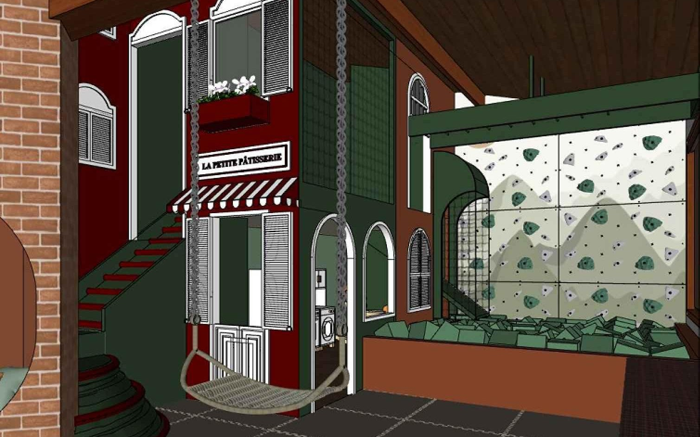
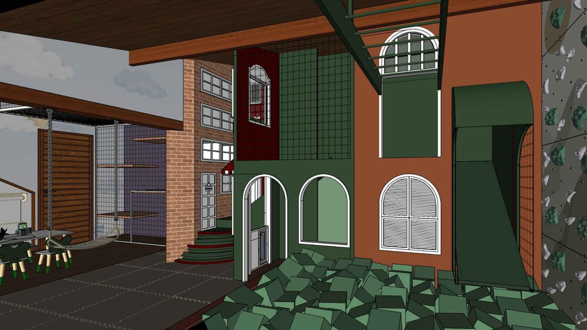
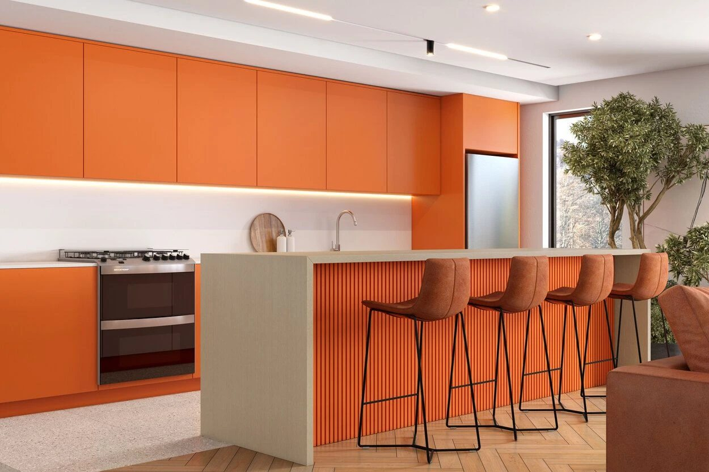

Uma brinquedoteca não se resolve com marcenaria. O que sustenta uma criança lá no alto é aço; o que a protege quando ela erra é espuma na densidade certa; e o que faz a casinha parecer uma casa de verdade é usinagem peça a peça.
São ofícios distintos no mesmo contrato — serralheria, marcenaria, estofaria, pintura automotiva e instalação — e insumos que não se compram no mesmo lugar: perfil de aço, corda de alma de aço, espuma em densidades diferentes, MDF ultra premium, laca, tecido e revestimento emborrachado.
Contratados em separado, cada um responde pelo seu pedaço e ninguém responde pelo conjunto — e é no encontro entre eles que a obra para. Aqui é um fornecedor só: um cronograma, uma medição, uma garantia.
É por isso que a Valvic não se apresenta como uma marcenaria. Somos uma empresa que articula soluções: quem dimensiona o aço, quem escolhe a densidade da espuma, quem tece a malha de corda, quem usina a curva e quem instala respondem ao mesmo projeto e ao mesmo contrato. A marcenaria é uma das mãos — não é o limite do que entregamos.

